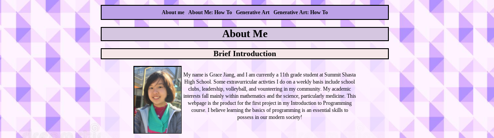
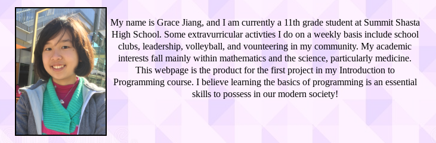
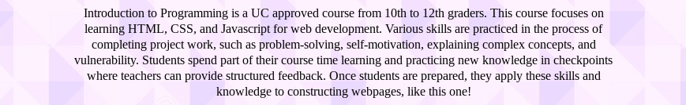
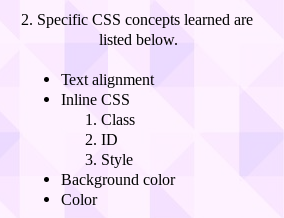

About Me: How To
What I Created


For this project, I created an About Me webpage that will function as a portfolio of all my projects in my Intro to Programming course. My About Me webpage is divided into many subsections; the first section provides a brief introduction of myself while the second section outlines a description of the Intro to Programing course and the knowledge I have gained so far in web development. At the top of the webpage, various links are displayed that will refer viewers to other programming projects that will be completed as the year continues. Thus, this webpage is a portfolio that collects all my programming work, which can be a resource for future interviews, applications, job resumes, etc.
How It Works Overall
This project works to display general information about myself, my Introduction to Programming course, and the various HTML and CSS concepts I have learned. Lists, images, borders, and other stylistic choices were used to emphasize and clearly illustrate different webpage sections.
Headers
Specific Code

The header tag was used frequently within my code to title and organize the sections of my webpage. Headers have an opening tag <h1> and closing tag </h1>, which are differentiated with the forward slash in the closing tag. Headers range from 1-6 with 1 being the largest size and 6 being the smallest size. For example, in the code shown above in line 22, the header “About Me” is embedded within the opening and closing tag of header 1 (<h1></h1>). Since the main title of the webpage is “About Me,” the use of <h1> tag is most appropriate because it is logical for the text size to be larger than other text on the webpage. On the other hand, the <h2> tag was used to label the two main sections of my webpage: Brief Introduction and Intro to Programming. As shown in line 24, “Brief Introduction” is embedded within the <h2></h2> tags, which creates the second largest headers. Although these headings are not as important as the main header, they still need to be emphasized on the webpage for viewers to easily navigate and find designated sections. Similarly, the <h3> tags (not shown above) was used to embed the “Programming Concepts Learned” subsection because I wanted it to become a portion of the overarching section “Intro to Programming.” By using a smaller header, viewers can easily identify that they are still reading the overarching section when viewing the subsections.
Specific Code

Result of Code
To further highlight these headers, CSS concepts of color and borders were applied. As displayed in the first image, inline CSS for borders was directly embedded within the opening header tag. One of the resulting lines of code is <h1 style="border: 3px solid black">About Me: How To</h1>. The portion of this code that is inline CSS is style="border: 3px solid black", which styles the largest header (<h1>) to have a solid black border that is 3 pixels wide in size. The reason I applied borders around all my headers is to emphasize the division areas of each section since these borders typically extend across the majority of the webpage. I also used CSS to apply background color to each of the headers, which is displayed in the second image above. This code in within specifically within the CSS sheet. For example, the line of code for my header 1 is h1 {background-color:#D5C6E0;}. The property written within the curly brackets is background-color along with the specific hex color (#D5C6E0) that I want to apply to the selected element, which is written at the front and in this case, is h1. Altogether, this line of CSS adds the color classified as #D5C6E0 as the background color for my header 1. My rationale behind using background color for headers is to decorate my website, so it appears more appealing to the viewers.
One choice I had to make while applying background-color to my headers was whether to make all headers a uniformed color or not. In the end, I decided to make my headers different shades of the same color, which can be identified in the second image above where the hex color of h1 is #D5C6E0 while the hex color is #F5E6E8 for h2 and h3. All background colors are a different shade of purple that was dark for the top-most header and became lighter as the webpage continues downward. I chose purple shades because it remained consistent with the color scheme of the webpage’s background image. The color-fading effect functions to show viewers that they have moved onto the next section or is reading further down the page. Although this approach has positive aspects, one potential limitation is viewers finding the use of similar color patterns, such as the purple color, as plain or unattractive. There are also other approaches towards emphasizing the presence of different headers, such as changes in font size and color or applying italics, that could be just as effective as my approach. I believe they are all valid options that will bring about similar effects.
Background
Specific Code


In order to decorate my About Me webpage, I added a background image that functions as the webpage’s decorative wallpaper. The code above is written in the CSS sheet. Based on the code, the element that the various CSS properties are applied to is the body. The body consists of everything the viewers will see on the webpage, so applying the background image to the body element will allow it to appear throughout the entire page. The highlighted line of code (line 24) displays the background image property and the online link of the selected image. This url is inserted within the parentheses, url(...), and the resulting code states the specific image with this link address will be used as the main background.
However, because the background image had darker areas, it became different to view the images and text displayed on the webpage. Another major choice I made while constructing my webpage was adding an extra layer of color above the background image. The rationale for this decision was that a solid layer would allow text and images to appear more prominent and prevent reading difficulties. In the second image above, the highlighted code (line 19) includes inline CSS that is embedded inside of a div tag. This div tag encloses all contents of the webpage’s body, which allows the inline CSS to apply to all elements nested within. The inline CSS is style="background-color:rgba(253, 242, 255,.75)". The first three values within the parentheses indicate the color used as the background while the fourth, or alpha, value (0.75) suggests the level of opacity. Values closer to 0.0 is fully transparent while values closer to 1.0 is fully opaque. I chose 0.75 opacity to allow some transparency, so the pattern of my background image could be visible without interfering with comprehension of text. This styling allowed the best mixture of my intentions, which was to display decorative designs while maintaining readability. Even though this format positively impacted my webpage, it is important to acknowledge that there could be other approaches towards this issue that may create similar results.
A third choice I had to make was adjusting the background image so it would remain stationary while the viewer scrolled through the webpage. In order to do this, I included background-attachment:fixed within my CSS code for the body element (shown in the first image). The code background-attachment:fixed functions to fix the background image in one position regardless of where the viewer is scrolling on the webpage. I decided to make this adjustment because my background image is composed of a geometric design, so having a moving background when scrolling could easily disturb the viewers eyes and cause confusion. I believe this was a beneficial adjustment for my webpage and would definitely apply it in future projects.
Organization
A large portion of my CSS code focused on the organization of different elements on the webpage and how certain formats created a better webpage from a visual viewpoint. Some concepts I used to organize my About Me page are text alignment, setting classes, and width styling.
Specific Code

Result of Code
For my webpage, I used the text-align property to position my headers at the center of the page. In the image above, the enclosed expression text-align:center states that the selected elements, which are h1 and h2, will be aligned at the center of the webpage. The property text-align functions to horizontally align text of an element, so it could be used to align text to the left, right, or center of the webpage by changing the value after the colon; for example, h1 {text-align:right} would shift h1 to the right. My rationale for aligning all headers to the center is because it creates an organized and symmetrical format that viewers can easily follow along. However, it is important to acknowledge that different alignment formats have their own pros and cons, and it may be possible that an alternative text-align could perform just as well.
Specific Code


Result of Code
Another way I organized components of my webpage was by positioning images directly beside associated text. This was done by creating a class attribute called “row-container” within an opening div tag in line 25. Inside the opening and closing div tag nests the image and text paragraph that I want to organize. The class attribute is inline CSS and functions to change multiple element types or a specific set of elements. In this case, the affected elements are the image and text paragraph nested within the div tags. To use the class attribute, a period must be typed before the class name (.row-container) and accompanied by curly brackets that contain properties and values. As shown in the second image, display: inline-block is contained within the curly brackets in line 16. The use of display:inline-block does not add a line break after the element, allowing it to sit next to another element, which was my goal. I used this method since I wanted to position an image of myself directly next to my brief self-introduction at the beginning of the webpage.
Specific Code

Result of Code
Furthermore, one unique choice I made during this project was styling the width of my text. In the image above, the style attribute highlighted in line 32 is inline CSS embedded within an opening paragraph tag. The resulting code is <p style="width:80%">, which means that the width of the paragraph is 80 percent of the webpage’s width. I made this decision because it created empty space around the paragraph, which make the webpage appear professionally made and carefully arranged. One limitation to this approach is that a large amount of space is wasted in the process, but it still has positive impacts on the visual appeal of my webpage, which I believe is more important in the context of my course.
Lists
Specific Code

Result of Code
 For the last portion of my About Me webpage, I created two lists that outline the various HTML and CSS concepts I have learned from my Intro to Programming course thus far. In the example shown above, the unordered list tag (<ul></ul>) was used to bullet point each concept. Within the unordered list tag, several list item tags (<li>) are nested. Text describing each list item is embedded between the opening and closing list item tag; for example, <li> Text alignment </li>. I chose to use a list format after trial and error. Initially, I listed each concept in a long sentence but eventually realized that it was difficult to read and remember the content. So, I changed my format to listing which provided shorter, clearer, and easier to locate information. I also decided to use an unordered list rather than an ordered one because they appear more neutral. Since ordered list are numbered, they often create the impression that one item is more important or prioritized over the remainder, which is not my intention, making the use of unordered list a better fit for my webpage.
On the other hand, I also nested an ordered list (<ol></ol>) within the list items in lines 66-70. This was done to demonstrate the specific types of inline CSS learned through the course. I utilized an ordered list for this portion in order to prevent viewers from confusing the regular listed items with the specific types of inline CSS. As stated previously, the major limitation of an ordered list is the impression of prioritizing one item over the others. Even though I took this negative aspect into consideration before finalizing my webpage, I believed that relevance of creating a clear, organized list for everyone outweighed the possibility that some people may find the list misleading.
My Afterthought
Before taking this Introduction to Programming course and completing this project, I had no knowledge in web development or programming languages. Through this project and associated programming tasks, I not only gained knowledge on the basics of HTML and CSS but also strengthened skills in perseverance and experimentation. I currently find programming to be a fun but challenging course that I am excited to continue exploring throughout this school year. Lastly, if I had more time, I would improve my About Me page by adding more images and decorations.